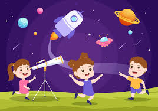

GALÁXIAS
Uma galáxia é uma enorme coleção de gás, poeira e de estrelas e seus sistemas solares. Uma galáxia é mantida unida pela gravidade. Nossa galáxia, a Via Láctea, também possui um no centro.
Algumas galáxias têm formato espiral como a nossa. Elas têm braços curvos que as fazem parecer um cata-vento. Outras galáxias são lisas e ovais. São chamadas de galáxias elípticas.
Quando você olha para as estrelas no céu noturno, você está vendo outras estrelas na Via Láctea.
Astronomia para crianças
Para aprender astronomia com crianças, utilize atividades lúdicas como a construção de um foguete de papelão, a observação de estrelas com aplicativos ou lunetas caseiras, e a leitura de livros infantis sobre o espaço.
Atualmente o Sistema Solar é formado por oito planetas que são, segundo a União Astronômica Internacional, corpos celestes que se encontram orbitando o Sol. Esses corpos possuem massa suficiente para garantir que a sua gravidade possibilite que tenham uma forma arredondada, conhecida como forma de equilíbrio estático.
É o planeta em que vivemos e o único que apresenta condições favoráveis para a existência de vida.
-> Encontra-se a 149.600.000 km do Sol.
-> A temperatura média no planeta é de 14°C.
-> Constituído por silicatos e basaltos.

A temperatura no planeta pode chegar a -140°C.